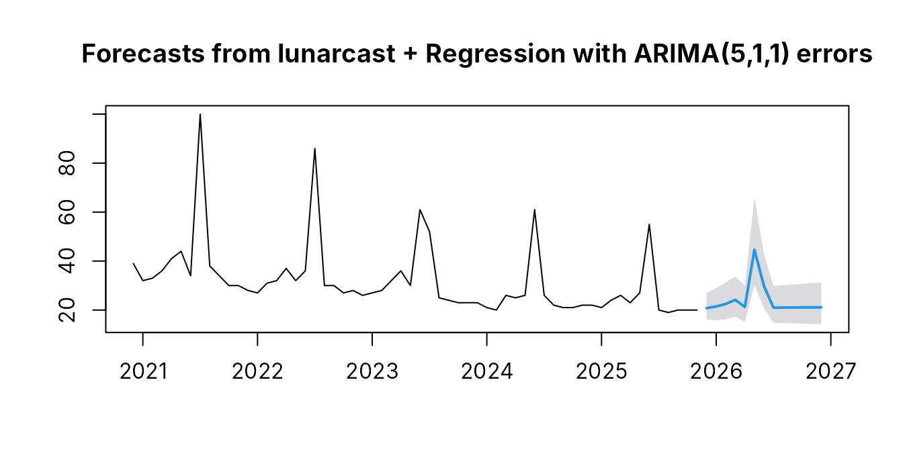

Panduan ini merangkum ide dan cara pakai lunarcast dalam bahasa
Indonesia. Penjelasan lengkap ada di vignette("theory") dan
contoh lengkap di vignette("lunarcast").
Masalahnya: hari raya yang bergeser
Tahun Hijriah sekitar 354 hari, sedangkan tahun Masehi sekitar 365 hari. Akibatnya Idul Fitri dan Idul Adha maju sekitar 11 hari setiap tahun, dan pada data bulanan efeknya pindah ke bulan sebelumnya kira-kira setiap 2,8 tahun. Imlek dan Paskah juga bergeser, meski dalam rentang sekitar satu bulan.
Model variasi kalender klasik
Model yang umum dipakai adalah regresi dengan galat ARIMA dan dummy bulan hari raya:
\[ Y_t = \beta_0 + \beta_1 t + S_t + \alpha V_t + N_t, \qquad V_t = 1 \text{ jika bulan } t \text{ memuat hari raya.} \]
Model ini berasumsi bahwa (1) hari raya hanya memengaruhi bulan yang memuatnya, (2) efeknya sama setiap tahun, dan (3) efeknya aditif. Ketiganya tidak berlaku pada data pencarian “sapi”: Idul Adha 31 Juli 2020 justru memuncak di Agustus, efeknya hampir nol pada 2004 lalu lebih dari tiga kali lipat sekitar 2015–2019, dan sisa efek yang tidak tertangkap dummy bocor ke komponen musiman sehingga muncul “puncak hantu” di bulan lama setelah hari raya pindah bulan.
Yang dilakukan lunarcast
- Regresor jendela. Dummy diganti dengan porsi hari dalam jendela \([D_{hj} + a_h,\ D_{hj} + b_h]\) di sekitar hari raya yang jatuh di setiap bulan: \[w_{hj,t} = \frac{|W_{hj} \cap P_t|}{|W_{hj}|}.\] Jendela \((a_h, b_h)\) dipilih otomatis. Jendela \((0, 0)\) sama dengan dummy klasik.
- Efek multiplikatif. Pada skala log, hari raya mengalikan level dengan \(e^{\alpha}\), bukan menambah angka tetap.
- Efek dua level. Setiap kejadian punya efek sendiri \(\alpha_{hj}\) (level 1), dan efek kejadian berikutnya diramal dari deret efek sebelumnya (level 2): \[\hat\alpha_{h,J+1} = g(\hat\alpha_{h1}, \ldots, \hat\alpha_{hJ}),\] dengan \(g\) dipilih dari rata-rata, rata-rata tertimbang, random walk, SES, atau damped Holt lewat validasi silang.
- Struktur tren dan musiman via validasi silang. Enam struktur model klasik (tren deterministik/stokastik × musiman dummy/Fourier/stokastik), ditambah opsi tanpa musiman, dibandingkan lewat ramalan satu tahun ke depan dari beberapa titik asal. Aturan satu galat baku memilih struktur paling sederhana yang galatnya masih dalam satu galat baku dari yang terbaik.
- Outlier (opsional). AO, LS, dan TC dideteksi di luar periode hari raya.
Model klasik adalah kasus khusus lunarcast: skala asli, jendela \((0, 0)\), efek konstan, satu hari raya, dan struktur yang ditetapkan.
Instalasi
install.packages("pak")
pak::pak("novrisuhermi/lunarcast")Contoh pemakaian
library(lunarcast)
hol <- list(adha = holiday_dates("idul_adha"),
fitri = holiday_dates("idul_fitri"))Spesifikasi otomatis penuh cukup dengan
lunarcast(sapi, hol) (sekitar satu menit). Agar contoh ini
cepat, jendela, tipe efek, dan struktur ditetapkan sesuai hasil
pemilihan otomatis pada data sapi:
fit <- lunarcast(sapi, hol,
window = list(adha = c(-3, 7), fitri = c(-28, 3)),
effect = list(adha = "two-level", fitri = "constant"),
trend = "stochastic", season = "none")
fit
#> lunarcast: Regression with ARIMA(5,1,1) errors | AICc = -281.2
#> Structure (fixed): stochastic + none, d = 1
#>
#> adha: two-level effect, window [-3, +7] days, level 2 = wmean (CV-RMSE 0.12)
#> event alpha se ratio
#> 2004-02-01 -0.227 0.1864 0.797
#> 2005-01-21 0.140 0.1116 1.150
#> 2006-01-10 -0.188 0.1043 0.828
#> 2006-12-31 -0.412 0.1886 0.663
#> 2007-12-20 0.220 0.0993 1.246
#> 2008-12-08 0.269 0.0994 1.309
#> 2009-11-27 0.544 0.1537 1.723
#> 2010-11-17 0.524 0.1003 1.689
#> 2011-11-06 0.605 0.1003 1.831
#> 2012-10-26 0.860 0.1253 2.363
#> 2013-10-15 0.973 0.0998 2.645
#> 2014-10-05 0.885 0.1001 2.424
#> 2015-09-24 1.080 0.1129 2.944
#> 2016-09-12 1.141 0.0994 3.129
#> 2017-09-01 1.353 0.1318 3.871
#> 2018-08-22 1.123 0.0993 3.074
#> 2019-08-11 1.152 0.1002 3.166
#> 2020-07-31 1.034 0.1473 2.811
#> 2021-07-20 1.000 0.0993 2.718
#> 2022-07-10 0.957 0.0997 2.604
#> 2023-06-29 1.151 0.1458 3.162
#> 2024-06-17 0.891 0.0994 2.438
#> 2025-06-06 0.855 0.1011 2.350
#>
#> fitri: constant effect, window [-28, +3] days
#> alpha se ratio
#> 0.159 0.0303 1.17Kolom ratio adalah efek multiplikatif setiap Idul Adha.
Grafik efek per kejadian beserta ramalan untuk kejadian berikutnya:
plot(fit)Ramalan 13 bulan ke depan, termasuk Idul Adha 27 Mei 2026:

round(cbind(ramalan = fc$mean, bawah = fc$lower[, 1], atas = fc$upper[, 1]), 1)
#> ramalan bawah atas
#> Dec 2025 20.8 16.1 26.9
#> Jan 2026 21.5 15.9 29.0
#> Feb 2026 22.5 16.2 31.3
#> Mar 2026 24.2 17.3 33.7
#> Apr 2026 21.3 15.1 30.0
#> May 2026 44.6 30.2 65.9
#> Jun 2026 29.8 20.8 42.7
#> Jul 2026 21.0 14.7 29.9
#> Aug 2026 21.0 14.6 30.2
#> Sep 2026 21.0 14.6 30.4
#> Oct 2026 21.1 14.5 30.7
#> Nov 2026 21.1 14.4 31.0
#> Dec 2026 21.1 14.3 31.2Skenario: bagaimana jika Idul Adha berikutnya menggandakan level?
Model klasik dan perbandingan
m6 <- calvar_classic(sapi, hol$adha, trend = "stochastic", season = "stochastic")
m6
#> Classical calendar variation model: stochastic trend + stochastic seasonality
#> Regression with ARIMA(1,1,1)(1,0,2)[12] errors | AICc = 1708.9
#> Holiday effect (same every year): 18.92 (s.e. 2.01), original scaleKeenam model klasik (m1 sampai m6) dapat diestimasi sekaligus dengan
calvar_classic_all(). Pada evaluasi rolling origin
14 tahun (2012–2025), model klasik terbaik (m6) memiliki RMSE 7,95,
sedangkan lunarcast 5,00; di bulan hari raya, RMSE turun dari 20,25
menjadi 8,06. Rinciannya ada di
vignette("classic-vs-lunarcast").
Fungsi utama
| Fungsi | Kegunaan |
|---|---|
lunarcast() |
model variasi kalender dua level otomatis |
forecast() |
ramalan dan skenario |
holiday_effects() |
tabel efek per kejadian |
calvar_classic(),
calvar_classic_all()
|
model variasi kalender klasik m1–m6 |
holiday_dates(),
easter_dates()
|
tanggal hari raya |
holiday_window() |
regresor jendela |
rolling_origin(),
rolling_summary()
|
evaluasi rolling origin |
forecast_accuracy() |
RMSE, MAE, MAPE, sMAPE |